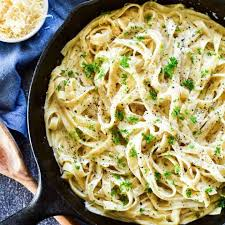

Fettuccine Alfredo

Description
An Italian pasta dish consisting of fettuccine, butter, parmesan cheese,
cream, and seasonings.
Ingredients:
- fettuccine pasta
- 4 Tbsp butter
- 2 Tbsp flour
- 2 C. cream
- 1 C. parmesan cheese
- 1 Tbsp garlic
- salt
- pepper
Steps:
- Cook fettuccine pasta according to box directions, then set aside.
- Melt butter on medium heat until it starts to bubble then add flour, whisk for
a minute or two until the mixture turns a light brown color.
- Add in minced garlic and cook for an additional minute.
- Slowly add in cream while whisking and continue until the sauce begins to thicken.
- A little at a time add in shredded parmesan and whisk into the sauce.
- Add salt and pepper to taste.
- Add cooked fettuccine pasta to sauce, mix together, and enjoy!